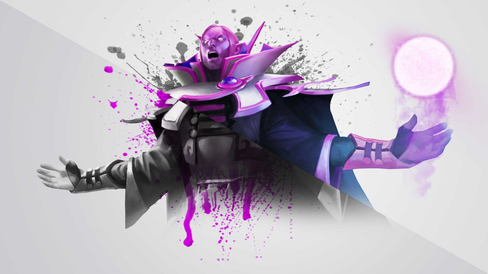

Invoker - мой самый любимый герой среди остальных 120 персонажей этой игры. Я сыграл на нём более 700 матчей.
Invoker — кор-герой, предпочитающий центральную линию, в некоторых случаях может выполнять роль поддержки. Имеет в своем арсенале десять заклинаний, которые создаются комбинированием сфер:
Quas, Wex, Exort и применением Invoke, что делает Invoker очень требовательным к микро-контролю персонажем.
Сферы пассивно дают различные бонусы, и для создания какой-либо способности их не обязательно применять в определенном порядке.
Так, Quas увеличивает восстановление здоровья, Wex — скорость атаки и передвижения, а Exort — урон с атаки.
Из-за большого количества заклинаний Инвокер может наносить огромный урон в сражениях, если будет правильно их использовать и комбинировать.
На панели способностей над Invoke есть список со всеми комбинациями заклинаний, это поможет вам быстро их запомнить, если вы только недавно познакомились с героем.
Сам же Invoke сперва имеет длительную перезарядку, однако она уменьшается за каждый уровень сфер.
Способности, получаемые с помощью комбинаций сфер:
- Cold Snap
Cold Snap. Комбинируется quas/quas/quas. Кратковременно оглушает цель каждый раз, когда она получает урон, однако имеет ограничение на частоту срабатывания, что позволяет легко ловить противников,
прерывать заклинания и не давать им использовать умения с долгой анимацией применения.
особенно эффективен против персонажей с небольшим запасом маны.
- Sun strike
Sun Strike Комбинируется exort/exort/exort. После небольшой задержки наносит чистый урон в маленьком радиусе в любой точке карты.
Sun Strike позволяет Invoker участвовать в убийствах даже не находясь рядом со сражением, однако желательно использовать Sun Strike под оглушение от союзника, так как способность имеет задержку.
Aghanim's Scepter позволяет использовать Sun Strike на себя, чтобы создать катаклизм (около каждого вражеского героя появляется два Sun Strike).
Станет отличным приобретением, если в вашей команде есть герои, которые имеют оглушение по области.
- Ghost walk
Ghost Walk Комбинируется quas/wex/quas. Делает Invoker невидимым, замедляет скорость передвижения противников поблизости и изменяет скорость передвижения самого Инвокера
(замедляет или ускоряет, в зависимости от уровня Wex), что помогает находить одиноких врагов или уходить от нападения.
- Ice Wall
Ice Wall Комбинируется quas/exort/quas. Создает ледяную стенку перед персонажем, которая замедляет скорость передвижения и периодически наносит урон, помогает как в обороне, так и в нападении.
- Forge Spirit
Forge Spirit Комбинируется exort/quas/exort. Создает духа, параметры которого зависят от уровня Exort и Quas.
Forge Spirit помогает фармить крипов в начале игры, так как Invoker в это время имеет небольшой урон с атаки.
- Chaos Meteor
Chaos Meteor Комбинируется exort/wex/exort. Призывает с небес метеорит, наносящий урон от касания и ненадолго поджигающий врагов.
Отлично сочетается с Cold Snap, так как позволяет часто накладывать микро-оглушения.
- Tornado
Tornado Комбинируется wex/quas/wex. Поднимает врагов на пути в воздух и наносит им урон при приземлении.
При высоком уровне Wex способность действует на большое расстояние, что позволяет легко ловить убегающих противников и проверять местность, например логово Рошана, или лес около вражеских вышек.
- Alarcity
Alacrity Комбинируется wex/exort/wex. Увеличивает урон и скорость атаки союзного существа. Полезно использовать на катапульту во время пуша,
так как она обладает увеличенным уроном по строениям.
- Deafening Blast
Deafening Blast Комбинируется quas/wex/exort. Отталкивает врагов в выбранном направлении, наносит урон и обезоруживает. Отлично дополнит комбинацию из Tornado и Chaos Meteor.
